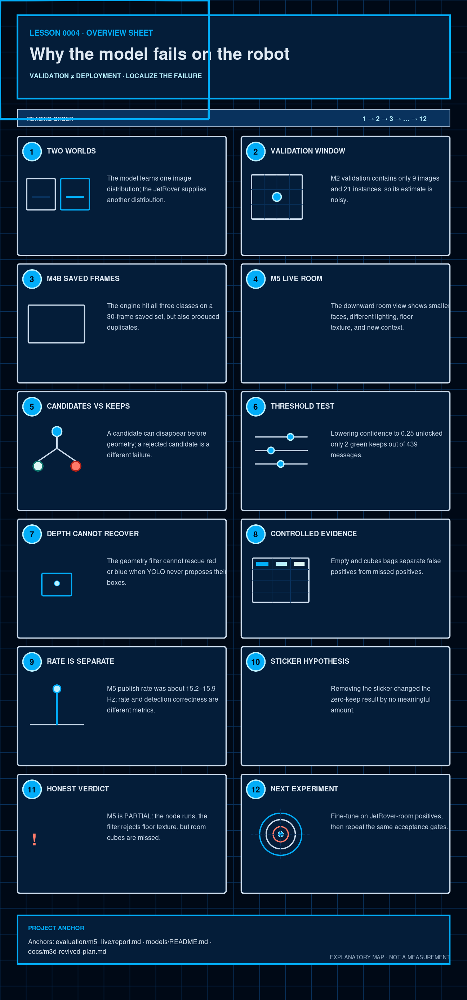

Software · AI · Robotics / Learning system
Lesson 0004 — Why the model fails on the robot
A strong score on one image distribution does not guarantee reliable detections in a different camera domain. We will localize the gap using the project’s measured evidence.
How to use this lesson
Read the explanation, inspect the visual, make a prediction, and then compare it with the repository evidence. The goal is a model of this project that you can explain—not a list of framework slogans.

The question this lesson answers
Why can a model score strongly on its validation images, work on one saved robot-camera set, and then miss the cubes in the live JetRover room? Because “the model” is only one part of a distribution-dependent pipeline. We need to compare the image domains and localize the stage at which evidence disappears.
Project truth
The current engineering status is M5 PARTIAL. The node builds, TensorRT loads, and the geometry filter rejects floor texture. The live cubes-in-frame gate is not met. That is evidence to learn from, not a reason to rewrite the story.
1. Validation is a window, not the whole world
The M2 validation result was measured on 9 images and 21 instances from the Roboflow export. Its overall mAP@0.5 was 0.954. This is a valid statement about that validation sample. It is not the same as “95.4% accurate on every JetRover frame,” especially when the sample is small and visually different from deployment.
A metric is only as representative as the data behind it. The live room test asks a different question.
2. M4b and M5 are not interchangeable tests
The saved M4b camera set contained 30 frames with one cube of each color in view. The model hit each class on 100% of that set, but it also produced more detections than frames: 91 blue, 52 green, and 34 red. The report explicitly notes color-confusable background and overlapping detections.
| Context | What it shows | Observed result |
|---|---|---|
| M2 Roboflow validation | training-domain validation | 9 images, 21 instances, mAP@0.5 0.954 |
| M4b saved camera frames | engine on an earlier robot-camera set | 30 frames; blue/green/red frame-hit 100%/100%/100% |
| M5c2 live, sticker off, conf 0.50 | current ROS node plus depth filter | 0/460 kept detections on cubes-in-frame |
| M5c2 diagnostic, conf 0.25 | lower threshold experiment | 2/439 keeps, green only |
3. What changed in the live room domain?
The M3d-revived analysis describes a downward JetRover camera at roughly 60–80 cm, with cube faces around 50–80 pixels, while the original Roboflow images are close-up views with much larger cube faces and cleaner backgrounds. The room also adds floor texture, lighting variation, distractors, and a different camera angle. These are plausible domain-gap mechanisms; they are not excuses until a controlled experiment supports them.
Scale
Small faces occupy fewer pixels and can produce weaker features.
Viewpoint
A downward room view is not the same geometry as a close-up training view.
Context
Floor texture and colored non-cubes introduce new visual patterns.
4. Localize the failure in the pipeline
Do not jump directly from “no published box” to “geometry filter is broken.” The current node has separate stages: YOLO produces candidates, _decode_yolov5_output() applies confidence/NMS, then compute_geometry() and decide() inspect valid candidates. If the model never proposes a red or blue box, a later depth filter has nothing to evaluate.
Interactive: choose the evidence-based diagnosis
If candidates exist but geometry rejects them as flat, inspect depth/box geometry and thresholds.
5. What the geometry evidence says
In the live empty bag, the node processed 439 messages and kept zero. The report records 991 flat rejects and one aspect reject across the analyzed candidates. That is a successful empty-scene safety behavior. In the cubes bag at confidence 0.50, the filter mostly saw floor-like candidates and rejected them; it did not receive full cube boxes to rescue.
6. Why lowering confidence was a diagnostic, not a fix
The sticker-off re-run at conf=0.25 produced only 2 keeps out of 439 messages, both green_cube. Red and blue stayed at zero. A lower threshold can reveal weak candidates, but it also expands the false-positive search space. This experiment narrowed the diagnosis: threshold alone is insufficient for the missing classes.
The exact M5c2 experiment unlocked green at 0.25 but not red or blue. The diagram is explanatory; the counts above are the observed evidence.
7. The sticker hypothesis was tested and rejected
The M5c2 re-test removed the dimming sticker from the camera. The zero-kept result at confidence 0.50 remained: 0/414 in the earlier cubes bag versus 0/460 sticker-off. The recorded brightness delta was only +0.82/255, within the experiment's noise interpretation. This is a good example of changing one suspected cause and then accepting what the evidence says.
8. Correctness and speed are separate gates
The live report measured a publish/frame-loop rate of 15.21–15.86 Hz, below the M5 report's 25 Hz frame-loop target, while the project definition separately states a final inference target of at least 5 fps. Do not use “the node is fast enough” to imply “the node detects correctly.” A pipeline can satisfy one dimension and fail another.
9. Honest conclusion
The evidence supports a narrow conclusion: current deployment artifacts execute, empty-scene floor candidates are rejected, and the live room cubes are not reliably proposed by the model at the operating threshold. The most plausible next intervention is positive-domain fine-tuning, not a classical-color detector and not a threshold-only workaround.
10. Check your understanding
Why can high validation mAP coexist with live failure?
What can the depth filter not do?
What did the sticker-removal experiment teach?
11. Tiny read-only exercise
Open evaluation/m5_live/report.md and write one sentence for each row: “What does this result rule in or rule out?” Use the empty bag, cubes bag at 0.50, and cubes diagnostic at 0.25. Do not call a threshold experiment a successful deployment.
Checking key
Empty=0 supports the geometry false-positive defense. Cubes=0 at 0.50 supports the positive-detection gap. Green-only at 0.25 supports a non-uniform class response and rejects threshold-only rescue.
12. Explain it back
Explain this without reading: “Why is the current result a domain-gap diagnosis rather than proof that ROS 2 or the geometry filter is broken?”
Point to at least two measured results and name one experiment that would reduce uncertainty.
What this lesson intentionally postpones
This lesson intentionally postpones dataset construction, training hyperparameter selection, and export mechanics. It identifies the failure and the evidence needed for the next intervention; Lessons 0005 and 0008 cover deployment and evaluation decisions in detail.
Primary references and next lesson
- Project README and the linked canonical documentation.
- Curriculum plan — scope, teaching contract, and project truth.
- Lesson 0005 — ONNX and TensorRT: follow one trained function through its deployment representations.